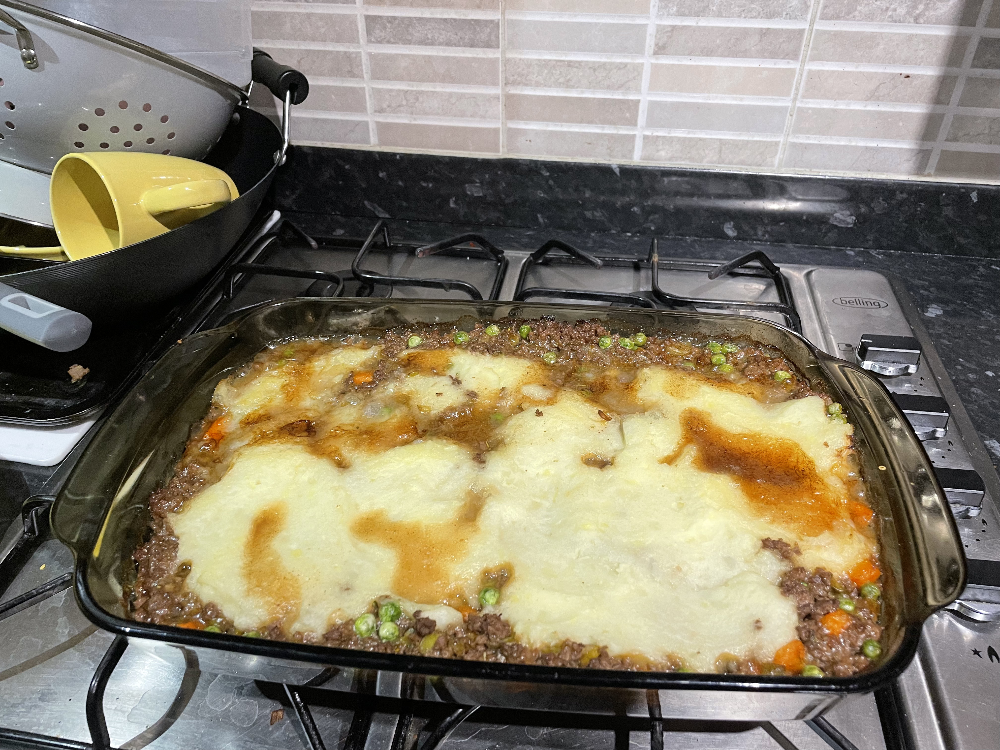

Odin Recipes | Cottage Pie

This scrumptious cottage pie recipe was pretty much made up as I went along, and ended up being a tad rushed due to trains.
I vastly underestimated how much mashed potato we'd need, hence the meagre display atop the meat in the above picture. Due to the afforementioned train I had to catch, I also had to take it out earlier than I would have liked, leading to a distinct lack of crisp on the top. My girlfriend rectified this after I left, as she forgot that we had put it back in the oven after taking our portions for tea. She only remembered half an hour later, at which point the previously anaemic mashed potato was practically cremated, or so I'm told.
Nevertheless, the dish was indeed tasy, if not lacking in grated cheese which we unfortunately didn't have in stock at the time.
Ingredients
- ~1kg Potatoes
- A knob of butter
- 1 Medium Onion
- 2 Cloves of Garlic
- 1 Leek
- 3 Carrots
- 500g-1kg Beef Mince
- A handful of garden peas (fresh or frozen)
- Beef and/or chicken stock cubes (bovril would also work)
- Worcester Sauce
- Salt/pepper (freshly ground is the best)
- Rosemary
- Cheese, to grate (optional)
N.B. - The leek, carrots, and peas can be substituted for any vegtables you have that need using up; this is a very adaptable dish and the meat can be padded out with pretty much anything!
Additionally, the meat does not have to be beef, nor does it have to be mince. Traditionally, this dish would be made from leftovers from a Sunday roast, so lamb or mutton work equally well. There is debate as to whether this would then be considered a shepherd's pie as opposed to a cottage pie, but as far as I can tell, the two terms are interchangeable regardless of meat (traditionally speaking, at least).
Method
- Preheat an oven to its maximum setting. A grill works as an alternative if necessary.
- Peel and dice rougly 1kg of potatoes. Put in a pan with cold water and a pinch of salt, put the lid on, and then bring to the boil. Tip: You can save the potato peels, toss in oil/salt/herbs, and place on a baking tray in the oven alongside the pie. This will create a lovely snack not dissimilar to crisps. Alternatively, put them in a stock box for later use, or in the compost.
- While the potatoes are heating up, prepare the aromatic vegetables: slice the onion and finely mince the garlic. I like to grate my garlic cloves with the skin on as this is quicker and easier than using a dull* uni student's knife!
- Heat some fat in a large saucepan or frying pan and fry the aromatics until translucent, stirring regularly to aviod burning.
- While the aromatics are frying, peel and dice the carrot, and half, wash, and slice the leek. Leek often collects dirt at the seam between the white and green portion, which runs diagonally down the stem. Be sure to wash thorougly unless you like eating mud! It would be at this point that you would prepare any alternative vegetables according to your preference.
- Add the newly prepared vegetables and once again stir until most of the steam subsides. The potatoes should be coming up to the boil at around this point, so be sure to keep an eye on them and reduce the temperature to avoid boiling over.
- Add in the mince or equivalent meat and stir vigourously to break it up (if minced). Cook until all meat is brown, or until pre-cooked meat is warmed through.
- Add boiling water until it bubbles just below the top of the ingredients in the pan. Season this with 2-3 stock cubes (or equivalent), worcester sauce, salt, pepper, and herbs.
- At this point, I like to preheat my glass baking dish by simply placing it in the oven for a couple of minutes.
- Turn the heat down, and add the peas, stirring occasionally until they are thawed/soft.
- While waiting for the peas, drain the potatoes and leave for a moment to evaporate the steam. Add the knob of butter and mash thoroughly.
- Carefully take the baking dish out of the oven and pour the meat and gravy mixture into the bottom, spreading evenly.
- Layer the mashed potato on top of the meat, again spreading thoroughly. At this point, you can grate some cheddar, red leicester, parmesan, or another hard cheese of your choice over the top. Season with freshly ground pepper. We didn't have any cheese this time, unfortunately.
- Place in the oven and bake until the mashed potato or cheese is golden-brown and slightly crispy.
*I should clarify, it is the knife that is dull, and not the uni student...
Hopefully you enjoyed the dish, or at the very least my writing style. Feel free to browse my other recipes.